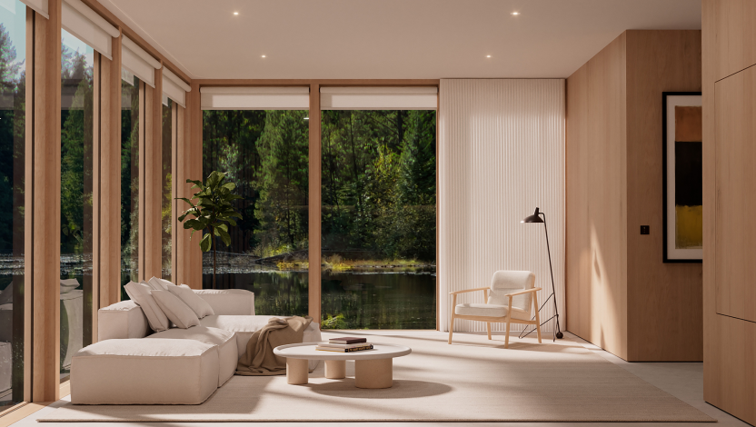
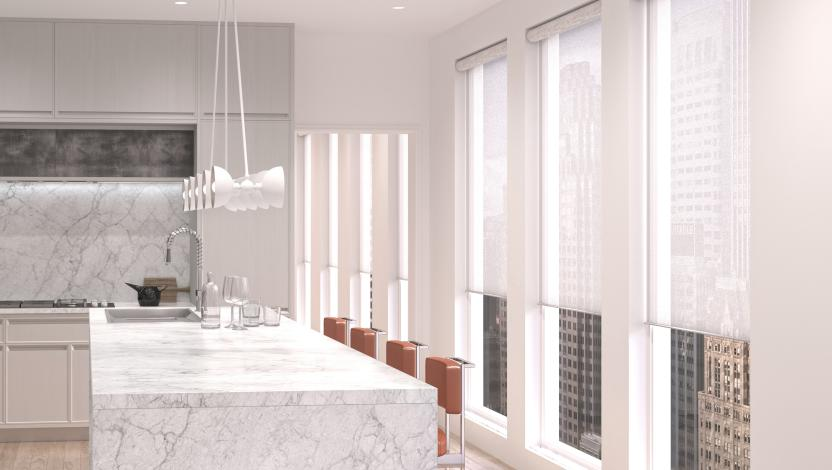
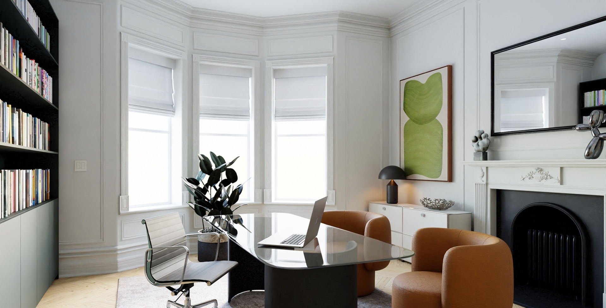
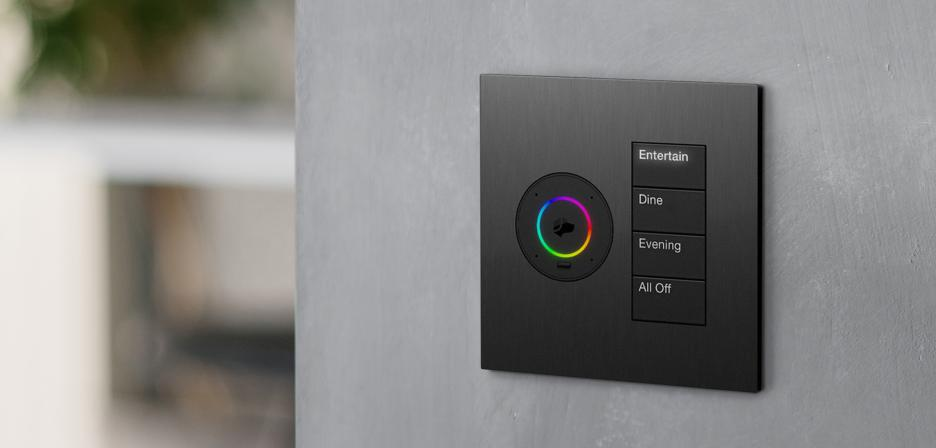
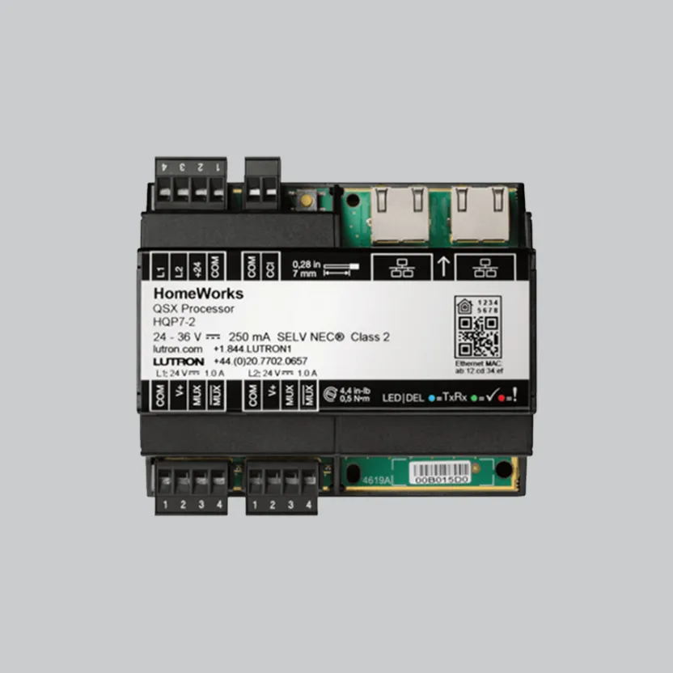

Lutron HomeWorks
A tailored whole-home system for lighting, shades and selected connected technologies.
LUTRON LIGHTING CONTROL
Lutron brings lighting, shades and scenes together, so your home can feel brighter in the morning, calm in the evening, and ready for the moments in between.
Get in touch
LIGHT, SHADES & SCENES
Lighting and window treatments work together to make a room feel right through the day, with simple controls close at hand.

AUTOMATED BLINDS & SHADES
Lutron blinds and shades can move automatically on a schedule or in response to daylight. Adjust them from a wall keypad, or include them in a scene alongside the lights.
Open gently in the morning, or lower for privacy later in the day.
Move the blinds directly, or bring lighting and shades together with one press.

CONTROL THAT SUITS THE ROOM
Choose a style, size, finish and button layout that belongs in the room. Each keypad can be configured around the scenes and everyday actions you want.

Set up a single button for a favourite scene, or choose a wider multi-button keypad for more options at a glance.
Available styles include the refined Palladiom range and the compact Architrave, with wide and narrow formats and different button arrangements.
THE SYSTEM BEHIND THE SCENES
For a panel-based HomeWorks design, the dimming modules and processor can sit together out of sight, while keypads make daily control feel effortless.
Lutron dimmer modules manage the lighting circuits, while the HomeWorks QSX processor coordinates the system. EverythingAV plans the panel around the property and the lighting it needs to control.
The illustration shows a representative panel arrangement. Equipment and module selection vary with each project.

QSX PROCESSORPLANNED AROUND YOUR HOME
We help shape the controls, lighting and shading into a considered system that feels natural to use.
A tailored whole-home system for lighting, shades and selected connected technologies.
A flexible wireless Lutron system for coordinated lighting and shade control around the home.
Set useful moods for waking, relaxing, entertaining or settling in for a film.
Choose control positions, finishes and button functions that suit each room and routine.
Blinds can follow a schedule or daylight, with direct keypad control or inclusion in a lighting scene.
Coordinate the agreed Lutron controls with wider home systems, then explain them clearly.
START WITH A CONVERSATION